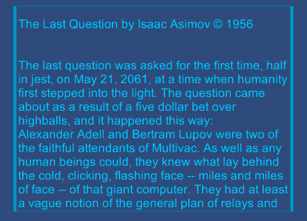

Widgets¶
The Leap Motion Core Assets include four UI controls, or widgets, that can be used as is or customized. These widgets include:
DemoDial – a scrolling list

DemoScrollText – a scrolling text box
DemoSlider – a slider control
DemoToggleButton – a two-state button
The prefabs for these widgets can be found in the LeapMotion/Widgets/Prefabs folder of the core assets package.
Note the widgets do not support mouse or touch screen interaction.
Adding a Widget to a Scene¶
To add a widget to a scene, simply drag the desired prefab into the scene view and set the position and scaling as appropriate. The main considerations for placing and sizing widgets are that you can easily reach the functional parts of your UI with the Leap Motion-generated hands and that multiple controls are large enough and spaced out enough that you can easily use one widget without accidentally touching another.
One technical consideration to note is that some of the widgets use Unity Canvas objects internally. If you place these widgets inside another canvas, you might have to play with the scaling manually because Unity only applies the scaling assigned to the outermost Canvas object.
There are two scenes demonstrating widgets included in the core asset package. The scene in LeapMotion/Widgets/Scenes illustrates a non-VR layout. The scene in LeapMotion+OVR/Widgets/Scenes illustrates a VR layout for the Oculus Rift.
Hooking a Widget to an Object Property¶
Three of the widgets, DemoDial, DemoSlider, and DemoToggleButton, represent a value: the dial menu selection, the slider numeric value, and the toggle button state, respectively. The widget library defines an abstract DataBinder class that you must implement to hook up the widget to the property of an object in your scene.
The DataBinder class is a generic type; a specific class type is defined for each of the widgets. These are defined at the end of the DataBinder.cs file (in LeapMotion/Widgets/Scripts/Interfaces):
public abstract class DataBinderSlider : DataBinder<SliderBase, float> {};
public abstract class DataBinderToggle : DataBinder<ButtonToggleBase, bool> {};
public abstract class DataBinderDial : DataBinder<DialGraphics, string> {};
In your concrete class, you implement two functions: one returns the current value of the property that serves as the data model for the widget; the other updates the value of that property and is called when you change the value of the bound control. For example, a DataBinderSlider implementation could look like this:
using UnityEngine;
using UnityEngine.UI;
using System.Collections;
using LMWidgets;
public class SliderDataModel : DataBinderSlider {
[SerializeField]
float sliderValue = 0; //Data model
override protected void setDataModel(float value) {
sliderValue = value;
}
override public float GetCurrentData() {
return sliderValue;
}
}
This example defines the data model property itself (sliderValue), but you could use the existing property of some scene object instead. In fact, the data model doesn’t need to be a simple property at all. It just needs to map to the widget’s data type. Your databinder script can be attached to any convenient object, such as the one that has the property used as the data model.
Additional examples of data binder scripts can be found in the core asset package in LeapMotion+OVR/Widgets/Scripts/DataBinderExamples.
After defining your databinder class and adding it to an object, you must drag the widget (the component containing the main script for the widget) to the Widgets property of your object in the Unity inspector.

Hooking Up Events¶
If you are interested in the interaction events of a widget in addition to its value, you can add event handlers. The widget library defines the following event handles:
- StartHandler – buttons, sliders, and dials
- EndHandler – buttons, sliders, and dials
- ChangeHandler – sliders and dials
Note that the scroll widget does not dispatch events.
To add an event handler, define an event handler function with the correct signature and add a function reference to the widget’s event handle. The signature of the event handler looks like:
void FunctionName(object sender, LMWidgets.EventArg<T> arg)
Where T is the type of the data associated with the widget. T will be bool for toggle buttons, float for sliders, and int for dials.
For example, you could define and register a function to handle the change event of a slider widget as follows:
public SliderDemo slider = null; //Set in inspector
void Start(){
slider.ChangeHandler += OnSliderChange;
}
private void OnSliderChange(object sender, LMWidgets.EventArg<float> eventData){
Debug.Log ("Slider changed to: " + eventData.CurrentValue);
}
Widget Properties¶
The following articles discuss how to set widget properties: